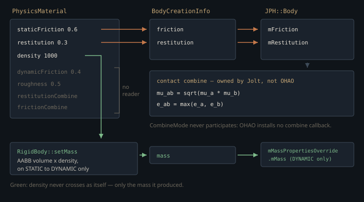

Monograph · Tree · ← Module hub · Physics materials
physics
Physics materials
Friction/restitution style materials.
Seven authored fields
`PhysicsMaterial` is a named bag of five scalars — density, restitution, static friction, dynamic friction, surface roughness — plus two enums saying how a pair of materials should be reconciled at a contact. The defaults encode Coulomb's observation that a surface grips harder before it slips than while it slides: static friction 0.6 against dynamic 0.4.
float m_staticFriction{0.6f}; // Typical static frictionohao/physics/material/physics_material.hpp:74Nothing enforces that ordering. The setters clamp ranges only, and they clamp asymmetrically: restitution is squeezed into [0, 1], both frictions are floored at zero with no ceiling (so `Rubber`'s μ = 1.2 is legal, as it should be — dry rubber on asphalt genuinely exceeds 1), and density is floored at 0.001 rather than clamped to anything physical. That floor is not load-bearing: density is only ever *multiplied* by a volume, never divided by, and the division a zero would actually endanger — `m_invMass = 1/m_mass` — is guarded by a clamp on mass, not by anything density did.
void setDensity(float density) { m_density = glm::max(density, 0.001f); }ohao/physics/material/physics_material.hpp:21The combine rules that never run
Two bodies in contact have two materials and the solver needs one friction and one restitution. `CombineMode` offers AVERAGE, MINIMUM, MAXIMUM, MULTIPLY, and the static combiners implement them with one deliberate asymmetry: for restitution, MINIMUM is *contagious* — if either material asks for it, the pair uses it, whatever the other material wanted.
CombineMode mode = (matA->getRestitutionCombine() == CombineMode::MINIMUM ||ohao/physics/material/physics_material.cpp:18Friction has no such rule: it simply adopts `matA`'s mode. That only bites when the two materials disagree — every branch of `combineValues` is symmetric in `a` and `b`, so a matching pair gives the same answer either way round — but when the modes differ, the result depends on which body the caller passes first.
return combineValues(matA->getStaticFriction(), matB->getStaticFriction(), mode);ohao/physics/material/physics_material.cpp:30Contagious MINIMUM does not exempt restitution from that defect. Once neither material has asked for MINIMUM, `combineRestitution` also falls through to `matA`'s mode, so an AVERAGE material meeting a MULTIPLY one is order-dependent there too.
CombineMode::MINIMUM : matA->getRestitutionCombine();ohao/physics/material/physics_material.cpp:20None of this executes. `combineRestitution`, `combineStaticFriction`, `combineDynamicFriction` and `combineValues` have no callers anywhere in `ohao/`, `examples/` or `tests/`, and — the check that matters — the arithmetic is not inlined at a contact site either, because OHAO has no contact site. Jolt owns contact response, and Jolt combines the two bodies' own scalars with its own functions: the geometric mean for friction, the maximum for restitution.
Here $\mu_a, \mu_b$ are the single friction coefficients Jolt stores per body and $e_a, e_b$ their restitutions; $\mu_{ab}, e_{ab}$ are what the contact constraint actually uses. These are Jolt v5.1.0's defaults, installed as lambdas on `ContactConstraintManager`, and OHAO never replaces them: `SetCombineFriction` and `SetCombineRestitution` exist in the Jolt sources the build fetches and are called from nowhere in `ohao/`, `examples/` or `tests/`. The contact listener OHAO does install is handed Jolt's `ContactSettings&`, the struct carrying `mCombinedFriction` and `mCombinedRestitution`, and leaves the parameter unnamed in both `OnContactAdded` and `OnContactPersisted`; it reads the manifold for events and writes nothing back.
void OnContactAdded(ohao/physics/backend/jolt/jolt_backend.cpp:197Worth noting that the geometric mean is not one of the four modes on offer: MULTIPLY is $ab$, not $\sqrt{ab}$. So even the combine mode closest to shipping behaviour would change it.
Two frictions, one slot
Jolt's rigid body carries a single friction coefficient. OHAO's material carries two. The reconciliation happens in `buildCreationInfo`, which picks the static one:
info.friction = body->getStaticFriction();ohao/physics/world/physics_world.cpp:556bodySettings.mFriction = info.friction;ohao/physics/backend/jolt/jolt_backend.cpp:533Dynamic friction therefore never reaches the solver: a sliding box resists with the same coefficient that held it at rest, and the stick–slip drop the material pair describes is not simulated. `PhysicsComponent::setFriction` is honest about this and writes one value into both fields. Surface roughness has no reader at all: `getRoughness()` is called from nowhere in `ohao/`, `examples/` or `tests/`, and the only code that touches the field writes it. Despite the name it has no connection to the renderer's GGX roughness either; the two live in unrelated structs.
material->setRoughness(roughness);ohao/physics/material/physics_material.cpp:143
The library that is never initialized
`MaterialLibrary` is a singleton that *declares* thirteen named presets with plausible physical values — steel at 7850 kg/m³, ice at 917 with μ = 0.1, mud with zero restitution. Declares, not holds: the numbers exist only as arguments to thirteen `createPredefinedMaterial` calls inside one function.
createPredefinedMaterial("Steel", 7850.0f, 0.2f, 0.8f, 0.6f, 0.3f);ohao/physics/material/physics_material.cpp:73`initializePredefinedMaterials()` has no caller. Not in the engine, not in the examples, not in the tests. That alone would be a benign dead-table, except for how lookup handles a miss: it does not report one. `getMaterial` falls through to constructing a fresh default-valued material under the requested name and caching it. The live map therefore never holds more than one entry — the `"Default"` that the first `RigidBody` constructor auto-vivifies.
return createMaterial(name);ohao/physics/material/physics_material.cpp:116So `getSteel()` succeeds and returns a material *called* "Steel" carrying the constructor defaults — 1000 kg/m³, restitution 0.3, μs 0.6. Water density and moderate bounce, silently, with no log line. The per-material combine overrides the initializer applies at the end — MINIMUM friction for ice, MAXIMUM friction and restitution for rubber — are doubly inert: never installed, and never consulted even if they were.
Auto-vivification was presumably chosen so a scene naming an unknown material still loads instead of crashing. The cost is that a typo, a missing initializer call and a correct lookup are indistinguishable at the call site — nothing logs, and `hasMaterial()`, the one query that could tell them apart, has no caller. The obvious repair — return `nullptr` on a miss — is not a drop-in. `RigidBody`'s own accessors do carry hard-coded fallbacks for a null material: {{cite ohao/physics/dynamics/rigid_body.cpp "return m_material ? m_material->getRestitution() : 0.3f;"}} but `PhysicsComponent` does not. Its null path assigns `getDefault()` and then copy-constructs from `*material` with no second check — and under a nullptr-returning lookup `getDefault()` returns null forever, since nothing else populates `"Default"`. That change trades a silent wrong value for a dereference of null. The cheap honest version is a log line at the auto-create site. {{cite ohao/physics/components/physics_component.cpp "void PhysicsComponent::setRestitution(float restitution) {"}}
One Default, aliased by every body
Every `RigidBody` starts by taking the library's default, and because the library hands out cached `shared_ptr`s, every body created without an explicit material points at the *same* `PhysicsMaterial` object.
m_material = MaterialLibrary::getInstance().getDefault();ohao/physics/dynamics/rigid_body.cpp:21`PhysicsComponent` respects that: its setters copy the material before editing, so one body's tweak stays local, and then push the scalar to the backend so the live Jolt body agrees.
newMaterial->setRestitution(restitution);ohao/physics/components/physics_component.cpp:80The Python test bindings take the other route — they mutate through the shared pointer in place.
mat->setDynamicFriction(friction * 0.8f); // Dynamic is typically lowertests/python/physics_bindings.cpp:86Setting friction on one body from a Python harness therefore rewrites the library's "Default" for every other body still aliasing it, and, unlike the component path, never propagates to the backend at all. Both halves of that are invisible until a test asserts on a body it did not touch.
Density's one live path
Density feeds automatic mass, but the branch is narrower than it reads. `updateMassProperties` only auto-computes when mass is non-positive, and `setMass` clamps every incoming value up to `MIN_MASS`:
m_mass = math::clamp(mass, constants::MIN_MASS, constants::MAX_MASS);ohao/physics/dynamics/rigid_body.cpp:55which is 1e-3 — the tree declares that constant twice, and unqualified from `RigidBody`'s namespace the name binds to the `physics/common` one:
constexpr float MIN_MASS = 1e-3f;ohao/physics/common/physics_constants.hpp:34So no caller can drive a dynamic body's mass to zero and trigger it. The one route in is the STATIC → DYNAMIC transition: the static branch zeroes mass, and changing type re-runs the mass update with the new type, which finally reaches the density multiply.
setMass(volume * density);ohao/physics/dynamics/rigid_body.cpp:358That volume is the axis-aligned bounding box's, not the shape's — even though every shape already implements its own `getVolume()`, which this path never calls.
[[nodiscard]] virtual float getVolume() const = 0;ohao/physics/collision/shapes/collision_shape.hpp:49A sphere therefore gets $6/\pi \approx 1.91$ times the mass its radius implies. A capsule is *less* overweighted, not more: for radius $r$ and cylindrical section $h_c$, the AABB is $4r^2(h_c + 2r)$ and the true volume $\pi r^2 h_c + \tfrac{4}{3}\pi r^3$, so
which is $6/\pi$ only in the degenerate $h_c = 0$ case and falls monotonically to $4/\pi \approx 1.27$ as the capsule lengthens. The sphere is the *worst* case of that family. A triangle mesh admits no such ratio at all — `TriangleMeshShape::getVolume()` returns zero for every mesh, closed or not.
// For now, return 0 (surface has no volume)ohao/physics/collision/shapes/triangle_mesh_shape.hpp:124The AABB is also taken at the body's live rotation, so a rotated box's auto-computed mass depends on which way it happened to be facing at the instant of the transition.
return m_collisionShape->getAABB(m_position, m_rotation);ohao/physics/dynamics/rigid_body.cpp:237The densities in the table are real measured values; the geometry they multiply is not.
Of the seven fields an author can set on a `PhysicsMaterial`, two — restitution and *static* friction — cross into the backend as themselves, and density crosses only laundered through `RigidBody`'s mass. Once there the material object stops mattering: contact response is Jolt's per-body scalars combined by Jolt's own rules. Editing `CombineMode`, `dynamicFriction` or `roughness` changes nothing observable in a simulation.
Contracts
- `initializePredefinedMaterials()` has no caller and `getMaterial()` auto-creates on a miss, so every preset getter currently returns constructor defaults. Adding the initializer call would move nothing today: `"Default"` is the only name any code asks for, and the initializer builds it with (1000, 0.3, 0.6, 0.4, 0.5) — the constructor's own values. It starts mattering only when something calls `getSteel()` and friends, which nothing does.
- Every `RigidBody` built without an explicit material shares the library's single "Default" instance. Mutating through `getPhysicsMaterial()` edits all of them; copy first, as `PhysicsComponent` does.
- Of the material's own fields, `buildCreationInfo` transmits static friction and restitution directly, and density only indirectly — via `info.mass`, which Jolt installs as `mMassPropertiesOverride.mMass` for DYNAMIC bodies. Dynamic friction, roughness and both combine modes are never transmitted. After a body exists, editing any material field has no backend effect except through `PhysicsComponent::setRestitution`/`setFriction`, which explicitly push to the backend.
info.mass = body->getMass();ohao/physics/world/physics_world.cpp:555bodySettings.mMassPropertiesOverride.mMass = info.mass;ohao/physics/backend/jolt/jolt_backend.cpp:548- Density affects mass only on a STATIC → DYNAMIC type change with a collision shape attached, and it multiplies AABB volume, not shape volume.
- Some bodies never touch `PhysicsMaterial` at all: the terrain body sets its friction and restitution as raw floats in the creation info, and `updateTerrainFriction` later writes friction straight to the backend handle for weather effects.
info.friction = 0.7f;ohao/physics/world/physics_world.cpp:934Source files
ohao/physics/material/physics_material.hppohao/physics/material/physics_material.cppohao/physics/backend/jolt/jolt_backend.cppohao/physics/world/physics_world.cppohao/physics/dynamics/rigid_body.cppohao/physics/components/physics_component.cpptests/python/physics_bindings.cppohao/physics/common/physics_constants.hppohao/physics/collision/shapes/collision_shape.hppohao/physics/collision/shapes/triangle_mesh_shape.hppParent hub for the full pipeline narrative; this page is the file-level design unit. Sitemap · hover glossary terms anywhere.